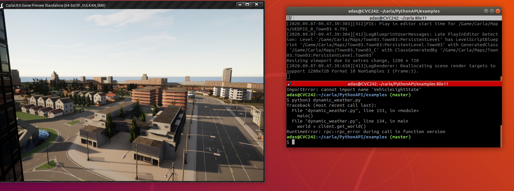

常问的问题¶
此处列出了有关 Carla 安装和构建的一些最常见问题。更多信息可以在该项目的 GitHub issues 找到。如果您没有发现此处列出的疑问，请查看论坛并随时提问。
专业问题¶
系统要求¶
Linux 构建¶
- 从 GitHub 下载时不会出现“CarlaUE4.sh”脚本。
- “make launch” 在 Linux 上不起作用。
- 克隆虚幻引擎存储库显示错误。
- AttributeError: module 'carla' has no attribute 'Client' when running a script.
- 无法运行示例脚本或 "RuntimeError: rpc::rpc_error during call in function version".
Windows 构建¶
- 从 GitHub 下载时不会出现“CarlaUE4.exe”。
- CarlaUE4 无法编译。尝试从源手动重建它。
- 即使 CMake 已正确安装，也会显示 CMake 错误。
- Error C2440, C2672：编译器版本。
- “make launch”在 Windows 上不起作用。
- Make 缺少 libintl3.dll 或/和 libiconv2.dll。
- 模块缺失或使用不同的引擎版本构建。
- 在
PythonAPI/carla中尽管成功输出消息，但没有dist文件夹 - osm2odr-visualstudio为空，或者拷贝过去的目录不对
- 类型转换不对
- 链接不到osm2odr.lib
- 编译器的堆空间不足
编译 OpenHUTB 分支¶
make lanunch ARGS="--chrono"报错¶
D:/work/workspace/carla/Unreal/CarlaUE4/Plugins/Carla/Source/Carla/Sensor/FisheyeSensor.cpp(219): error C2653: “CubemapHelpersFisheye”: 不是类或命名空间名称
D:/work/workspace/carla/Unreal/CarlaUE4/Plugins/Carla/Source/Carla/Sensor/FisheyeSensor.cpp(279): note: 查看对正在编译的函数 模板 实例化“void AFisheyeSensor::SendPixelsInRenderThread<AFisheyeSensor>(TSensor &,float,float,float,float,float,float,float,float,float,float,float)”的引用
with
[
TSensor=AFisheyeSensor
]
D:/work/workspace/carla/Unreal/CarlaUE4/Plugins/Carla/Source/Carla/Sensor/FisheyeSensor.cpp(219): error C2065: “FFisheyeParams”: 未声明的标识符
D:/work/workspace/carla/Unreal/CarlaUE4/Plugins/Carla/Source/Carla/Sensor/FisheyeSensor.cpp(219): error C2146: 语法错误: 缺少“;”(在标识符“FisheyeParams”的前面)
D:/work/workspace/carla/Unreal/CarlaUE4/Plugins/Carla/Source/Carla/Sensor/FisheyeSensor.cpp(219): error C2065: “FisheyeParams”: 未声明的标识符
D:/work/workspace/carla/Unreal/CarlaUE4/Plugins/Carla/Source/Carla/Sensor/FisheyeSensor.cpp(221): error C2065: “FisheyeParams”: 未声明的标识符
D:/work/workspace/carla/Unreal/CarlaUE4/Plugins/Carla/Source/Carla/Sensor/FisheyeSensor.cpp(223): error C2065: “FisheyeParams”: 未声明的标识符
D:/work/workspace/carla/Unreal/CarlaUE4/Plugins/Carla/Source/Carla/Sensor/FisheyeSensor.cpp(225): error C2065: “FisheyeParams”: 未声明的标识符
D:/work/workspace/carla/Unreal/CarlaUE4/Plugins/Carla/Source/Carla/Sensor/FisheyeSensor.cpp(227): error C2065: “FisheyeParams”: 未声明的标识符
D:/work/workspace/carla/Unreal/CarlaUE4/Plugins/Carla/Source/Carla/Sensor/FisheyeSensor.cpp(229): error C2653: “CubemapHelpersFisheye”: 不是类或命名空间名称
D:/work/workspace/carla/Unreal/CarlaUE4/Plugins/Carla/Source/Carla/Sensor/FisheyeSensor.cpp(229): error C2065: “FisheyeParams”: 未声明的标识符
D:/work/workspace/carla/Unreal/CarlaUE4/Plugins/Carla/Source/Carla/Sensor/FisheyeSensor.cpp(229): error C3861: “GenerateLongLatUnwrapFisheye”: 找不到标识符
因为鱼眼相机需要修改虚幻引擎中的代码，需要同步更新 UnrealEngine 分支中的代码。
运行 Carla¶
- 运行Carla_0.9.12.sh时候报错：error while loading shared libraries: libomp.so.5
- 在虚幻编辑器中运行服务器时 FPS 速率较低。
- 无法运行脚本。
- 当在虚幻编辑器中运行时链接到模拟器。
- 无法运行 Carla，无论是二进制还是源代码构建。
- ImportError: DLL load failed: The specified module could not be found.
- ImportError: DLL load failed while importing libcarla: %1 is not a valid Win32 app.
- ImportError: No module named 'carla'
- RuntimeError: rpc::rpc_error during call in function apply_batch
- ValueError: sticky_control: invalid value type
其他¶
- Fatal error: 'version.h' has been modified since the precompiled header.
- 创建 Carla 的二进制版本。
- 我可以在 Linux 计算机上打包适用于 Windows 的 Carla，反之亦然吗？
- 如何卸载 Carla 客户端库？
系统要求¶
构建 Carla 所需的磁盘空间。 ¶
建议至少有 170GB 可用空间。构建 Carla 需要大约 35GB 的磁盘空间，加上虚幻引擎大约需要 95-135GB。
运行 Carla 的推荐硬件。 ¶
Carla 是一款性能要求较高的软件。它至少需要 6GB GPU，或者更好的是能够运行虚幻引擎的专用 GPU。
看看 虚幻引擎推荐的硬件 。
Linux 构建¶
从 GitHub 下载时不会出现“CarlaUE4.sh”脚本。 ¶
Carla 的源版本中没有
CarlaUE4.sh脚本。按照 构建说明 从源代码构建 Carla。要使用
CarlaUE4.sh运行 Carla，请按照 快速启动安装 进行操作。
“make launch”在 Linux 上不起作用。 ¶
在构建安装过程中可能会拖出许多不同的问题，并会像这样显现出来。以下是最可能的原因列表：
- 运行虚幻引擎 4.26。 构建虚幻引擎时可能出现某些问题。尝试单独运行虚幻编辑器并检查它是否是 4.26 版本。
- 下载资产。 如果没有视觉内容，服务器将无法运行。此步骤是强制性的。
- UE4_ROOT 未定义。 境变量未设置。请记住通过将其添加到
~/.bashrc或~/.profile来使其在会话范围内持久存在。否则，需要为每个新 shell 进行设置。运行export UE4_ROOT=<path_to_unreal_4-26>设置这次的变量。- 检查依赖。 确保一切都安装正确。也许其中一个命令被跳过、不成功或者依赖项不适合系统。
- 删除 Carla 并再次克隆它。 以防万一出了问题。删除 Carla 并重新克隆或下载。
- 满足系统要求。 Ubuntu 版本应为 16.04 或更高版本。Carla 需要大约 170GB 的磁盘空间和一个专用 GPU（或至少一个 6GB）才能运行。
系统显示与 Carla 冲突的其他特定原因可能会发生。请将这些内容发布到 论坛 上，以便团队可以更多地了解它们。
克隆虚幻引擎存储库显示错误。 ¶
1. 虚幻引擎帐号是否已激活？ 虚幻引擎存储库是私有的。为了克隆它，请创建虚 幻引擎帐 户，激活它（检查验证邮件），然后 链接您的 GitHub 帐户。
2. git是否安装正确？ 有时错误表明与
https协议不兼容。通过卸载并重新安装 git 即可轻松解决。打开终端并运行以下命令：sudo apt-get remove git # 卸载 git sudo apt install git-all # 安装 git
AttributeError: module 'carla' has no attribute 'Client' when running a script. ¶
运行以下命令。
pip3 install -Iv setuptools==47.3.1并再次构建 PythonAPI。
make PythonAPI尝试构建文档来测试一切是否正常运行。应该会显示成功的消息。
make PythonAPI.docs
无法运行示例脚本或 "RuntimeError: rpc::rpc_error during call in function version". ¶

如果运行脚本返回与此类似的输出，则说明 PythonAPI 中的
.egg文件存在问题。
!!! 重要
如果您使用的是 0.9.12+，有多种方法可以使用/安装客户端库。如果您使用客户端库（.whl 或 PyPi 下载）的较新方法之一，本节中的信息将与您无关。
首先，打开
<root_carla>/PythonAPI/carla/dist。 应该有一个和你正在使用相对应的 Carla 和 Python 响应的.egg文件（类似于carla-0.X.X-pyX.X-linux-x86_64.egg）。确保该文件与您正在使用的 Python 版本匹配。要检查您的 Python 版本，请使用以下命令。python3 --version # 或者对于 Python 2 python --version如果文件丢失或者您认为它可能已损坏，请尝试再次重建。
make clean make PythonAPI make launch现在再次尝试示例脚本之一。
cd PythonAPI/examples python3 dynamic_weather.py如果错误仍然存在，则问题可能与您的 PythonPATH 有关。这些脚本会自动查找
.egg与构建相关的文件，因此，您的 PythonPATH 中可能存在另一个.egg文件干扰该过程。使用以下命令显示 PythonPATH 的内容。echo $PYTHONPATH在类似于
PythonAPI/carla/dist的路径下查找另一个.egg文件，并删除它们。它们可能属于 Carla 安装的其他实例。例如，如果您还通过 apt-get 安装了 Carla ，则可以使用以下命令将其删除，并且 PythonPATH 也会被清理。sudo apt-get purge carla-simulator最终可以选择使用
~/.bashrc，将PythonPATH下你构建的.egg文件添加进来。这不是推荐的方式。最好有一个明确的 PythonPATH，只需在脚本中添加必要的.egg文件路径即可。首先，打开
~/.bashrc.gedit ~/.bashrc将以下行添加到
~/.bashrc。它们存储构建的.egg文件路径，以便Python可以自动找到它。保存文件，然后重置终端以使更改生效。export PYTHONPATH=$PYTHONPATH:"${CARLA_ROOT}/PythonAPI/carla/dist/$(ls ${CARLA_ROOT}/PythonAPI/carla/dist | grep py3.)" export PYTHONPATH=$PYTHONPATH:${CARLA_ROOT}/PythonAPI/carla清理 PythonPATH 或添加构建的
.egg文件路径后，所有示例脚本都应该正常工作。
Windows 构建¶
从 GitHub 下载时不会出现“CarlaUE4.exe”。 ¶
Carla 的源版本中没有
CarlaUE4.exe可执行文件。按照构建说明从源代码构建 Carla。要直接获取CarlaUE4.exe，请按照 快速入门 说明进行操作。
CarlaUE4 could not be compiled. Try rebuilding it from source manually. ¶
尝试构建 Carla 时出现问题。使用 Visual Studio 重新构建以发现发生了什么。
1. 转到
carla/Unreal/CarlaUE4并右键单击CarlaUE4.uproject。2. 单击 Generate Visual Studio project files。
3. 使用 Visual Studio 2019 打开生成的文件。4. 使用 Visual Studio 编译项目。快捷键是F7。构建将失败，但发现的问题将显示在下面。
不同的问题可能会导致出现此特定错误消息。用户@tamakoji 解决了一个经常出现的情况，即源代码未正确克隆且无法设置 Carla 版本（从 git 将其下载为 .zip 时）。
- 检查
Build/CMakeLists.txt.in. 如果显示：set(CARLA_VERSION )，请执行以下操作：1. 转到
Setup.bat第 198 行。2. Update the line from:
for /f %%i in ('git describe --tags --dirty --always') do set carla_version=%%i为：
for /f %%i in ('git describe --tags --dirty --always') do set carla_version="0.9.9"
即使 CMake 已正确安装，也会显示 CMake 错误。 ¶
当尝试使用 make 命令构建服务器或客户端时会出现此问题。即使 CMake 已安装、更新并添加到环境路径中。Visual Studio 版本之间可能存在冲突。
只留下VS2019，其余的彻底删除。
Error C2440, C2672: compiler version. ¶
由于与其他 Visual Studio 或 Microsoft 编译器版本冲突，该构建未使用 2019 编译器。卸载这些并再次重建。
Visual Studio 不擅长摆脱自身。要从计算机中彻底清除 Visual Studio，请转到
Program Files (x86)\Microsoft Visual Studio\Installer\resources\app\layout并运行.\InstallCleanup.exe -full。这可能需要管理员权限。要保留其他 Visual Studio 版本，请通过添加以下行进行编辑
%appdata%\Unreal Engine\UnrealBuildTool\BuildConfiguration.xml：<VCProjectFileGenerator> <Version>VisualStudio2019</Version> </VCProjectFileGenerator><WindowsPlatform> <Compiler>VisualStudio2019</Compiler> </WindowsPlatform>
“make launch”在 Windows 上不起作用。 ¶
在构建安装过程中可能会拖出许多不同的问题，并像这样显现出来。以下是最可能的原因列表：
- 重新启动计算机。 Windows 构建期间发生了很多事情。重新启动并确保所有内容均已正确更新。
- 运行虚幻引擎 4.26。 构建虚幻引擎时可能出现某些问题。运行编辑器并检查是否使用了 4.26 版本。
- 下载资产。 如果没有视觉内容，服务器将无法运行。此步骤是强制性的。
- Visual Studio 2019. 如果安装或最近卸载了其他版本的 Visual Studio，可能会出现冲突。要从计算机中彻底清除 Visual Studio，请转到
Program Files (x86)\Microsoft Visual Studio\Installer\resources\app\layout并运行.\InstallCleanup.exe -full。- 删除 Carla 并再次克隆它。 以防万一出了问题。删除 Carla 并重新克隆或下载。
- 满足系统要求。 Carla 需要大约 170GB 的磁盘空间和一个专用 GPU（或至少一个 6GB）才能运行。
系统显示与 Carla 冲突的其他特定原因可能会发生。请将这些内容发布到 论坛 上，以便团队可以更多地了解它们。
Make 缺少 libintl3.dll 或/和 libiconv2.dll。 ¶
下载 依赖项 并将
bin内容解压到make安装路径中。
Modules are missing or built with a different engine version. ¶
单击 on Accept 以重建它们。
尽管成功输出消息，但在PythonAPI/carla中没有dist文件夹。 ¶
在 Windows 中，
make PythonAPI命令可能会返回一条消息，表明 Python API 安装成功，但实际上并未成功。如果看到此输出后目录PythonAPI/carla中没有dist文件夹，请查看上面的命令输出。很可能发生了错误，需要在更正错误并运行make clean后重试构建。
osm2odr-visualstudio为空，或者拷贝过去的目录不对 ¶
CMake Error: The current CMakeCache.txt directory D:/work/workspace/carla/Build/osm2odr-visualstudio/CMakeCache.txt is different than the directory d:/work/buffer/carla/Build/osm2odr-visualstudio where CMakeCache.txt was created. This may result in binaries being created in the wrong place. If you are not sure, reedit the CMakeCache.txt
CMake Error: The source directory "D:/work/workspace/carla/Build/osm2odr-visualstudio/x64" does not appear to contain CMakeLists.txt.
删除
carla\Build\osm2odr-visualstudio\CMakeCache.txt
类型转换不对 ¶
carla/Unreal/CarlaUE4/Plugins/Carla/Source/Carla/Vehicle/CustomTerrainPhysicsComponent.cpp(1161): error C2440: “static_cast”: 无法从“float”转换为“EDefResolutionType”注释掉
注意：注意vs2019专业版才有这个问题，vs2019社区版没有这个问题。// ChosenRes = static_cast<EDefResolutionType>(Value); // static_cast<EDefResolutionType>(Value)
链接不到osm2odr.lib ¶
fatal error LNK1181: carla\Unreal\CarlaUE4\Plugins\Carla\CarlaDependencies\lib\osm2odr.lib从其他地方拷贝过来。
编译器的堆空间不足 ¶
编译虚幻引擎4时，出现
C1060编译器的堆空间不足，说明机器的内存不够，可以参考链接 限制所使用的核心数（默认是使用所有核心数）。 修改Engine/Saved/UnrealBuildTool/BuildConfiguration.xml中的MaxProcessorCount：<?xml version="1.0" encoding="utf-8" ?> <Configuration xmlns="https://www.unrealengine.com/BuildConfiguration"> <ParallelExecutor> <ProcessorCountMultiplier>7</ProcessorCountMultiplier> <MaxProcessorCount>7</MaxProcessorCount> <bStopCompilationAfterErrors>true</bStopCompilationAfterErrors> </ParallelExecutor> </Configuration>
运行 Carla¶
运行Carla_0.9.12.sh时候报错：error while loading shared libraries: libomp.so.5。 ¶
sudo apt-get install libomp5
在虚幻编辑器中运行服务器时 FPS 速率较低。 ¶
虚幻4编辑器在失焦时会进入低性能模式。
转到“编辑->编辑器偏好设置->性能” （
Edit/Editor Preferences/Performance），然后禁用“处于背景中时占用较少 CPU”选项。
无法运行脚本。 ¶
有些脚本有要求。这些列在名为 Requirements.txt 的文件中，与脚本本身位于同一路径中。请务必检查这些以便运行脚本。其中大多数可以通过简单的
pip命令进行安装。有时在 Windows 上，脚本无法仅使用
> script_name.py运行。尝试添加. Try adding> python3 script_name.py，并确保位于正确的目录中。
在虚幻编辑器中运行时连接到模拟器。 ¶
单击“运行”（ Play ）并等待场景加载。此时，Python 客户端可以像独立模拟器一样连接到模拟器。
无法运行 Carla，无论是二进制还是源代码构建。 ¶
NVIDIA 驱动程序可能已过时。确保情况并非如此。如果问题仍未解决，请查看 论坛 并发布具体问题。
ImportError: DLL load failed: The specified module could not be found. ¶
所需的库之一尚未正确安装。作为解决方法，请转至
carla\Build\zlib-source\build并在脚本的路径中复制名为zlib.dll的文件。
ImportError: DLL load failed while importing libcarla: %1 is not a valid Win32 app. ¶
32 位 Python 版本在尝试运行脚本时会产生冲突。卸载它并仅保留所需的 Python3 x64。
ImportError: No module named 'carla' ¶
出现此错误的原因是 Python 找不到 Carla 库。Carla 库包含在位于
PythonAPI/carla/dist目录中的一个.egg文件中，所有示例脚本都将在此目录中查找它。该.egg文件遵循carla--py - .egg 命名法。
!!! 重要
Carla 仅在 0.9.12 之前的版本中使用客户端库文件 .egg。如果您使用的是 0.9.12+，有多种方法可以使用/安装客户端库。如果您使用客户端库（.whl 或 PyPi 下载）的较新方法之一，本节中的信息将与您无关。
在 [__快速入门教程__](start_quickstart.md#carla-0912) 中阅读有关使用/安装客户端库的新方法的更多信息。
如果您使用的是打包版本的 Carla，则会有多个
.egg文件，对应不同版本的 Python，具体取决于 Carla 的版本。确保您正在使用这些 Python 版本之一运行脚本。要检查默认的 Python 版本，请在命令行中键入以下内容：python3 --version # 或者 python --version如果您从源代码构建 Python，则该
.egg文件将根据系统上的默认 Python 版本构建。在 Linux 中，这将是返回的默认 Python 版本：/usr/bin/env python3 --version # 或者如果你指定 ARGS="--python-version=2" /usr/bin/env python2 --version在 Windows 中，它将成为以下功能的默认 Python 版本：
py -3 --version确保您使用与您的
.egg文件对应的 Python 版本运行脚本.egg。在 Linux 中，您可能还需要将 Python 路径设置为指向 Carla。为此，请运行以下命令：export PYTHONPATH=$PYTHONPATH:<path/to/carla/>/PythonAPI/carla/dist/<your_egg_file> # 检查现在 Carla 是否能发现 python3 -c 'import carla;print("Success")'请注意，虚拟环境或 Conda 等其他 Python 环境可能会使 Carla 的安装变得复杂。确保您已相应地设置 Python 默认值和路径。
RuntimeError: rpc::rpc_error during call in function apply_batch ¶
PythonAPI的版本要和Carla服务的版本一致，比如dev分支的代码编译得到的虚幻编辑器运行的场景也要用dev分支代码编译的PythonAPI进行连接。
ValueError: sticky_control: invalid value type ¶
客户端和服务端的PythonAPI版本不一致，在dev分支开发时会出现。
解决：服务端是dev分支，PythonAPI也要使用在dev分支上编译的客户端。 解决2：如果确认Simulator端和客户端版本一致，但是仍然报两者版本不一致的话，先卸载客户端，然后通过
pip install carla安装官方版本，然后再卸载安装编译版本的*.whl文件即可。
其他¶
Fatal error: 'version.h' has been modified since the precompiled header. ¶
由于 Linux 更新，这种情况时常发生。Makefile 中有一个针对此问题的特殊目标。虽然花了很长时间，但解决了问题：
make hard-clean make CarlaUE4Editor
创建 Carla 的二进制版本。 ¶
在 Linux 中，在项目文件夹中运行
make package。该包将包括项目和 Python API 模块。或者，可以在虚幻编辑器中编译 Carla 的二进制版本。打开 CarlaUE4 项目，转到菜单
File/Package Project，然后选择一个平台。可能还要等一下。
我可以在 Linux 计算机上打包适用于 Windows 的 Carla，反之亦然吗？ ¶
虽然此功能适用于虚幻引擎，但在 Carla 中不可用。我们有许多不支持交叉编译的依赖项。
如何卸载 Carla 客户端库？ ¶
如果您使用 pip/pip3 安装了客户端库，则应通过运行以下命令将其卸载：
# Python 3
pip3 uninstall carla
# Python 2
pip uninstall carla